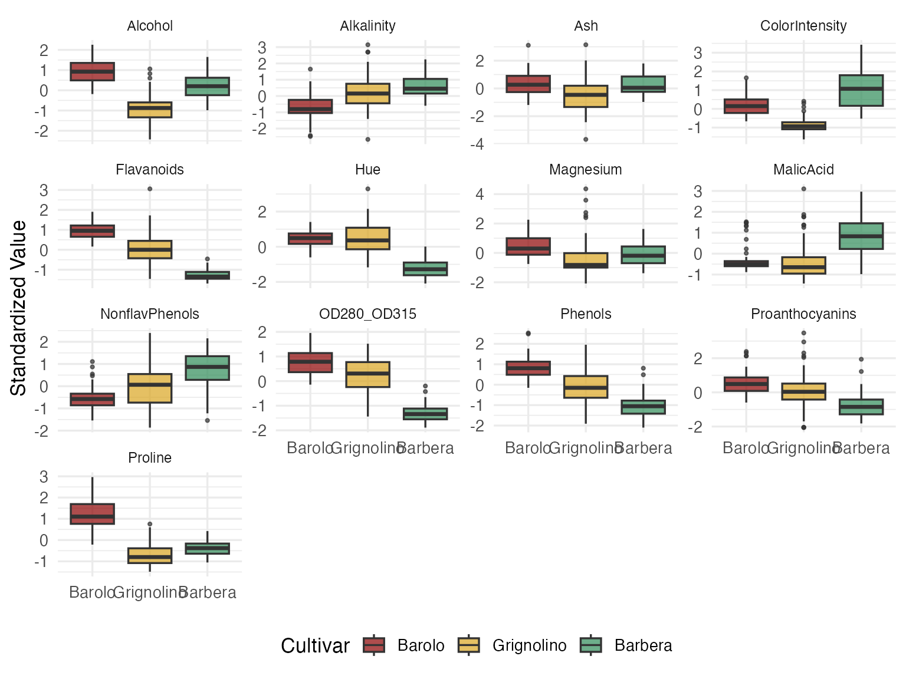
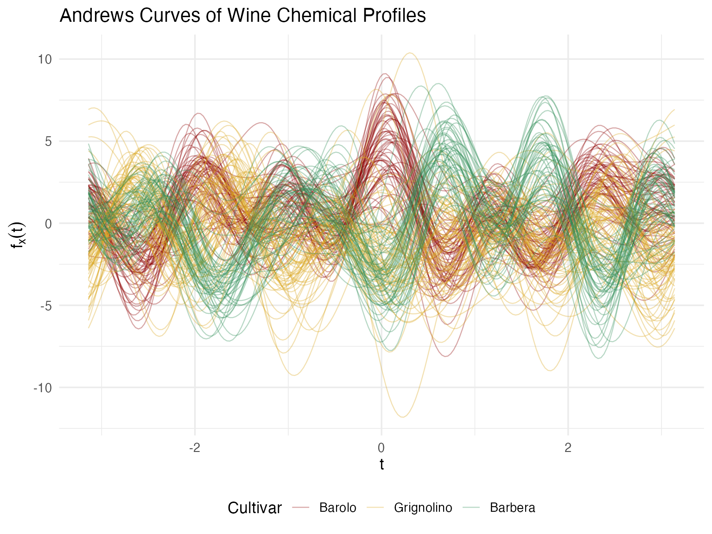
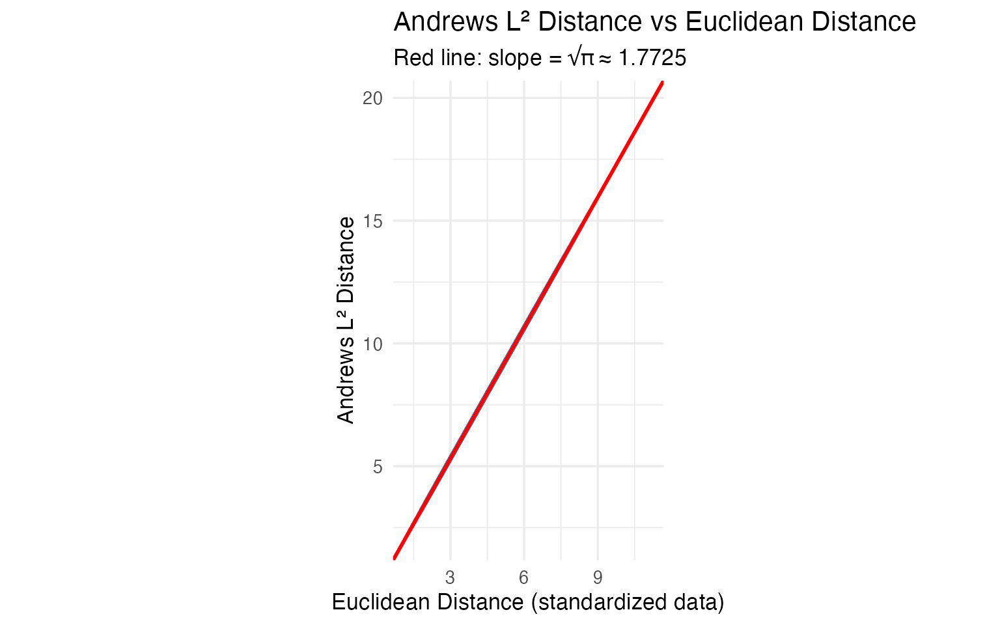

Andrews Wine: Why Andrews Curves?
Source:vignettes/articles/example-andrews-wine-intro.Rmd
example-andrews-wine-intro.RmdThis is the starting point for a four-article series analyzing 178 wines (3 cultivars, 13 chemicals) with Andrews curves and functional data analysis.
| Article | What It Does | Outcome |
|---|---|---|
| Why Andrews Curves? (this article) | Transform 13 chemicals into curves; verify distance preservation | Each wine becomes a visual fingerprint; distances equal Euclidean — nothing lost |
| Outlier Detection | Depth, outliergram, MS-plot | 9 anomalies classified by type — mislabel, soil anomaly, or concentration — with corrective actions |
| Clustering & Variable Importance | K-means, fuzzy c-means, permutation test, FPCA | Cultivar recovery at 96% accuracy; top 5 chemicals identified for cost reduction |
| Quality Control | Functional boxplots, depth rankings, tolerance bands | Monitoring system that checks new batches against a validated specification in one chart |
The Problem with Tables
A quality-control analyst reviews 178 wines, each tested for 13 chemical properties — that’s 2,314 numbers. The questions are simple: Any anomalous wines? Do the three cultivars (Barolo, Grignolino, Barbera) look chemically distinct? Which chemicals matter most?
The business needs are concrete:
- Detect production anomalies before a defective batch ships
- Validate cultivar identity for denomination-of-origin certification
- Reduce testing costs by identifying redundant assays
- Establish ongoing monitoring against a validated reference profile
Standard practice uses separate tools for each (spreadsheet, MANOVA, PCA, per-variable control charts), each with its own distance metric and assumptions. Nothing connects them.
The alternative: transform all 13 chemicals into Andrews
curves and apply a unified pipeline of functional data analysis
methods. Every step operates on the same fdata object with
the same
distance semantics.
# UCI Wine dataset: 178 wines, 3 cultivars, 13 chemical measurements
wine_url <- "https://archive.ics.uci.edu/ml/machine-learning-databases/wine/wine.data"
col_names <- c("Cultivar", "Alcohol", "MalicAcid", "Ash", "Alkalinity",
"Magnesium", "Phenols", "Flavanoids", "NonflavPhenols",
"Proanthocyanins", "ColorIntensity", "Hue",
"OD280_OD315", "Proline")
wine <- read.csv(wine_url, header = FALSE, col.names = col_names)
# Use real cultivar names
cultivar <- factor(wine$Cultivar,
levels = 1:3,
labels = c("Barolo", "Grignolino", "Barbera"))
# Standardize the 13 chemical variables
X <- scale(as.matrix(wine[, -1]))
chem_names <- colnames(wine)[-1]
cat(nrow(wine), "wines,", ncol(X), "chemicals,",
nlevels(cultivar), "cultivars\n")
#> 178 wines, 13 chemicals, 3 cultivars
df_box <- data.frame(X) |>
mutate(Cultivar = cultivar) |>
tidyr::pivot_longer(-Cultivar, names_to = "Chemical", values_to = "Value")
ggplot(df_box, aes(x = Cultivar, y = Value, fill = Cultivar)) +
geom_boxplot(alpha = 0.7, outlier.size = 0.8) +
facet_wrap(~ Chemical, scales = "free_y", ncol = 4) +
scale_fill_manual(values = c("Barolo" = "#8B0000",
"Grignolino" = "#DAA520",
"Barbera" = "#2E8B57")) +
labs(x = NULL, y = "Standardized Value") +
theme(legend.position = "bottom",
strip.text = element_text(size = 9))
Some variables (Flavanoids, Proline, Color Intensity) clearly separate cultivars. Others (Ash, Magnesium) overlap heavily. But you can’t see a wine here — you see 13 disconnected box-and-whisker slices. Every decision about blending, pricing, or fraud detection requires a holistic view of each wine’s chemical fingerprint. That’s where Andrews curves come in.
Turning Rows into Curves
The Andrews transformation (Andrews, 1972) maps each -dimensional observation to a curve on using a Fourier expansion:
The key guarantee: distance between curves equals times the Euclidean distance between the original vectors. Nothing is lost. Nothing is distorted.
fd_wine <- andrews_transform(X)
cat("Andrews curves:", nrow(fd_wine$data), "observations,",
ncol(fd_wine$data), "grid points\n")
#> Andrews curves: 178 observations, 200 grid points
n <- nrow(fd_wine$data)
m <- ncol(fd_wine$data)
t_grid <- fd_wine$argvals
df_curves <- data.frame(
t = rep(t_grid, n),
value = as.vector(t(fd_wine$data)),
curve = rep(1:n, each = m),
Cultivar = rep(cultivar, each = m)
)
ggplot(df_curves, aes(x = t, y = value, group = curve, color = Cultivar)) +
geom_line(alpha = 0.35, linewidth = 0.4) +
scale_color_manual(values = c("Barolo" = "#8B0000",
"Grignolino" = "#DAA520",
"Barbera" = "#2E8B57")) +
labs(title = "Andrews Curves of Wine Chemical Profiles",
x = expression(t), y = expression(f[x](t))) +
theme(legend.position = "bottom")
Now each wine has a signature — a single visual object that encodes all 13 measurements. A quality manager can glance at a curve and compare it to the cultivar’s typical profile. Wines that “look different” are immediately suspicious. This is the multivariate equivalent of a chromatography trace — one picture captures the whole chemical identity.
Proving the Bridge Works
Pretty pictures are nice, but for regulatory or audit contexts, we need a mathematical guarantee. The Andrews distance preservation theorem says:
Let’s verify this on all pairwise distances.
# Compute pairwise distances in both domains
dist_andrews <- metric.lp(fd_wine)
dist_euclid <- as.matrix(dist(X))
# Extract upper triangle
idx_upper <- upper.tri(dist_andrews)
d_a <- dist_andrews[idx_upper]
d_e <- dist_euclid[idx_upper]
# Filter zero-distance pairs (if any duplicates)
nonzero <- d_e > 1e-10
ratio <- d_a[nonzero] / d_e[nonzero]
cat(sprintf("Distance ratio (Andrews / Euclidean):\n"))
#> Distance ratio (Andrews / Euclidean):
cat(sprintf(" Mean: %.4f\n", mean(ratio)))
#> Mean: 1.7725
cat(sprintf(" Median: %.4f\n", median(ratio)))
#> Median: 1.7725
cat(sprintf(" SD: %.2e\n", sd(ratio)))
#> SD: 3.97e-16
cat(sprintf(" sqrt(pi): %.4f\n", sqrt(pi)))
#> sqrt(pi): 1.7725
df_dist <- data.frame(euclidean = d_e[nonzero], andrews = d_a[nonzero])
ggplot(df_dist, aes(x = euclidean, y = andrews)) +
geom_point(alpha = 0.08, size = 0.5, color = "steelblue") +
geom_abline(slope = sqrt(pi), intercept = 0, color = "red", linewidth = 1) +
labs(title = "Andrews L² Distance vs Euclidean Distance",
subtitle = sprintf("Red line: slope = √π ≈ %.4f", sqrt(pi)),
x = "Euclidean Distance (standardized data)",
y = "Andrews L² Distance") +
coord_equal()
The ratio is to machine precision. Any conclusion drawn from the curves — outliers, clusters, similarities — translates exactly back to the original 13 chemical measurements. For regulatory or audit contexts, this mathematical proof is essential: you can report findings in chemical units, not abstract curve distances.
What This Means for Analysis
Because the transformation is isometric, distance-based methods give
numerically equivalent results whether you apply them
to the curves or to the raw 13-column matrix. FPCA on Andrews curves and
prcomp() on the standardized data produce scores that
correlate at
.
K-means recovers the same clusters. If all you need is PCA + clustering
on a clean matrix, prcomp() and kmeans() are
simpler and sufficient.
The value of the functional representation is in the tools that have no direct multivariate equivalent:
| FDA Method | Classical Equivalent | What FDA Adds |
|---|---|---|
outliers.depth.pond() |
Mahalanobis distance | Same core idea, but combined with outliergram() and
magnitudeshape() you can classify outliers by type
(magnitude vs shape) — something Mahalanobis alone cannot do |
cluster.kmeans() |
kmeans() on raw data |
Same clusters, but centroids are curves you can plot and overlay — a visual fingerprint, not 13 numbers |
fdata2pc() |
prcomp() |
Same variance decomposition; eigenfunctions are the visual version of a loading table |
boxplot() |
13 separate control charts | No equivalent. One chart monitors all 13 chemicals simultaneously via functional depth |
tolerance.band() |
Multivariate tolerance region | No equivalent. Defines a nonparametric envelope in function space; new wines are checked against a single band |
group.test() |
MANOVA | Nonparametric permutation test; bootstrap CIs show where on the curve profiles diverge |
The bottom line: Andrews curves earn their keep when you use the functional toolbox — depth-based outlier classification, functional boxplots, tolerance bands, simultaneous monitoring. For methods where classical statistics already gives the same answer (PCA, k-means), the functional version adds visualization and pipeline integration, but not new statistical information.
Next Steps
The remaining articles apply FDA methods to these Andrews curves:
Outlier Detection: Three complementary methods classify 9 anomalies by type with specific corrective actions.
Clustering & Variable Importance: K-means, fuzzy c-means, FPCA, and permutation testing.
Quality Control: Functional boxplots, tolerance bands, and a three-phase monitoring workflow.